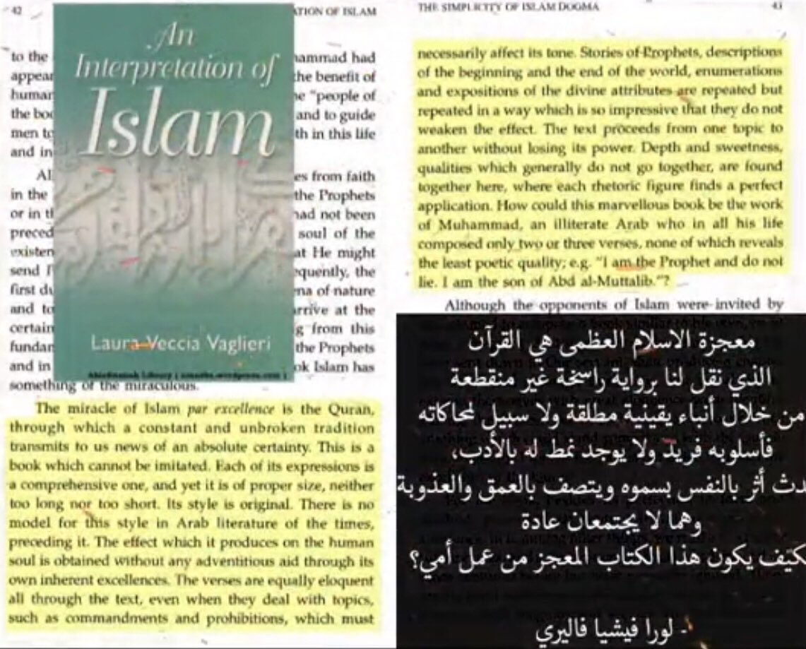
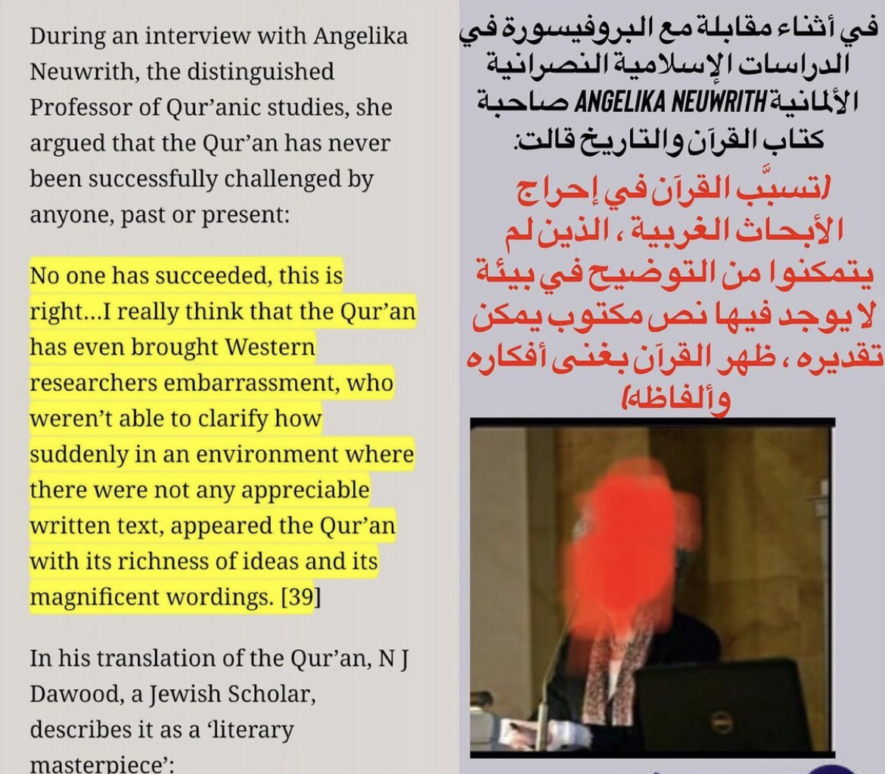

Humanity has received the Divine guidance through two channels: firstly the word of Allah,
secondly the Prophets who were chosen by Allah to communicate His will to human beings.
These two things have always been going together and attempts to know the will of Allah by neglecting either of these two have always been misleading.
The Hindus neglected their prophets and paid all attention to their books that proved only word puzzles which they ultimately lost. Similarly, the Christians,
in total disregard to the Book of Allah, attached all importance to Christ and thus not only elevated him to Divinity, but also lost the very essence of TAWHEED (monotheism)
contained in the Bible.
As a matter of fact the main scriptures revealed before the Qur'an, i.e., the Old Testament and the Gospel, came into book-form long after the days of the
Prophets and that too in translation. This was because the followers of Moses and Jesus made no considerable effort to preserve these Revelations during the life
of their Prophets. Rather they were written long after their death. Thus what we now have in the form of the Bible (The Old as well as the New Testament) is translations of individuals'
accounts of the original revelations which contain additions and deletions made by the followers of the said Prophets.
On the contrary, the last revealed Book, the Qur'an, is extant in its original form. Allah Himself guaranteed its preservation and that is why the whole
of the Qur'an was written during the lifetime of the Prophet Muhammad (PBUH) himself though on separate pieces of palm leaves, parchments, bones, etc...
Moreover, there were tens of thousands of companions of the Prophet who memorized the whole Qur'an and the Prophet himself used to recite to the Angel Gabriel
once a year and twice when he was about to die.
The first Caliph Abu Bakr entrusted the collection of the whole Qur'an in one volume to the Prophet's scribe, Zaid Ibn Thabit. This volume was with Abu Bakr till his death.
Then it was with the second Caliph Umar and after him it came to Hafsa, the Prophet's wife. It was from this original copy that the
third Caliph Uthman prepared several other copies and sent them to different Muslim territories.
The Qur'an was so meticulously preserved because it was to be the Book of guidance for humanity for all times to come.
That is why it does not address the Arabs alone in whose language it was revealed. It speaks to man as a human being:
"O Man! What has seduced you from your Lord." The practicability of the Qur'anic teachings is established by the examples of Muhammad (PBUH)
and the good Muslims throughout the ages. The distinctive approach of the Qur'an is that its instructions are aimed at the general welfare of man
and are based on the possibilities within his reach. In all its dimensions the Qur'anic wisdom is conclusive. It neither condemns nor tortures the
flesh nor does it neglect the soul. It does not humanize God nor does it deify man. Everything is carefully placed where it belongs in the total scheme of creation.
Actually the scholars who allege that Muhammad (PBUH) was the author of the Qur'an claim something which is humanly impossible.
Could any person of the sixth century C.E. utter such scientific truths as the Qur'an contains? Could he describe the evolution of the embryo
inside the uterus so accurately as we find it in modern science?
Secondly, is it logical to believe that Muhammad (PBUH), who up to the age of forty was marked only for his honesty and integrity, began all of a sudden
the authorship of a book matchless in literary merit and the equivalent of which the whole legion of the Arab poets and orators of highest calibre could
not produce? And lastly, is it justified to say that Muhammad (PBUH) who was known as AL-AMEEN (The Trustworthy) in his society and who is still admired
by the non-Muslim scholars for his honesty and integrity, came forth with a false claim and on that falsehood could train thousands of men of character,
integrity and honesty, who were able to establish the best human society on the surface of the earth? Surely, any sincere and unbiased searcher of truth
will come to believe that the Qur'an is the revealed Book of Allah. Without necessarily agreeing with all that they said, we furnish here some opinions
of important non-Muslim scholars about the Qur'an. Readers can easily see how the modern world is coming closer to reality regarding the Qur'an.
We appeal to all open-minded scholars to study the Qur'an in the light of the aforementioned points. We are sure that any such attempt will convince
the reader that the Qur'an could never be written by any human being.
"However often we turn to it [the Qur'an] at first disgusting us each time afresh, it soon attracts, astounds, and in the end enforces our reverence...
Its style, in accordance with its contents and aim is stern, grand, terrible - ever and anon truly sublime -- Thus this book will go on exercising
through all ages a most potent influence."
Goethe, quoted in T.P. Hughes' DICTIONARY OF ISLAM, p. 526.
"The Koran admittedly occupies an important position among the great religious books of the world. Though the youngest of the epoch-making works belonging to this class of literature,
it yields to hardly any in the wonderful effect which it has produced on large masses of men.
It has created an all but new phase of human thought and a fresh type of character.
It first transformed a number of heterogeneous desert tribes of the Arabian peninsula into a nation of heroes,
and then proceeded to create the vast politico-religious organizations of the Muhammadan world which are one of the great forces with which Europe and
the East have to reckon today."
G. Margoliouth, Introduction to J.M. Rodwell's, THE KORAN, New York: Everyman's Library, 1977, p. vii.
"A work, then, which calls forth so powerful and seemingly incompatible emotions even in the distant reader - distant as to time,
and still more so as a mental development - a work which not only conquers the repugnance which he may begin its perusal,
but changes this adverse feeling into astonishment and admiration, such a work must be a wonderful production of the human mind indeed and a problem of the highest interest
to every thoughtful observer of the destinies of mankind."
Dr. Steingass, quoted in T.P. Hughes' DICTIONARY OF ISLAM, pp. 526-527.
"The above observation makes the hypothesis advanced by those who see Muhammad as the author of the Qur'an untenable. How could a man, from being illiterate,
become the most important author, in terms of literary merits, in the whole of Arabic literature?
How could he then pronounce truths of a scientific nature that no other human being could possibly have developed at that time,
and all this without once making the slightest error in his pronouncement on the subject?"
Maurice Bucaille, THE BIBLE, THE QUR'AN AND SCIENCE, 1978, p. 125.
"Here, therefore, its merits as a literary production should perhaps not be measured by some preconceived maxims of subjective and aesthetic taste,
but by the effects which it produced in Muhammad's contemporaries and fellow countrymen.
If it spoke so powerfully and convincingly to the hearts of his hearers as to weld hitherto centrifugal and antagonistic elements into one compact and well-organized body,
animated by ideas far beyond those which had until now ruled the Arabian mind, then its eloquence was perfect,
simply because it created a civilized nation out of savage tribes, and shot a fresh woof into the old warp of history."
Dr. Steingass, quoted in T.P. Hughes' DICTIONARY OF ISLAM, p.528.
"In making the present attempt to improve on the performance of my predecessors, and to produce something which might be accepted as echoing however faintly
the sublime rhetoric of the Arabic Koran, I have been at pains to study the intricate and richly varied rhythms which - apart from the message itself -
constitute the Koran's undeniable claim to rank amongst the greatest literary masterpieces of mankind... This very characteristic feature -
'that inimitable symphony,' as the believing Pickthall described his Holy Book, 'the very sounds of which move men to tears and ecstasy' -
has been almost totally ignored by previous translators; it is therefore not surprising that what they have wrought sounds dull and
flat indeed in comparison with the splendidly decorated original."
Arthur J. Arberry, THE KORAN INTERPRETED, London: Oxford University Press, 1964, p. x.
"A totally objective examination of it [the Qur'an] in the light of modern knowledge, leads us to recognize the agreement between the two,
as has been already noted on repeated occasions. It makes us deem it quite unthinkable for a man of Muhammad's time to have been the author of
such statements on account of the state of knowledge in his day. Such considerations are part of what gives the Qur'anic Revelation its unique place,
and forces the impartial scientist to admit his inability to provide an explanation which calls solely upon materialistic reasoning."
Maurice Bucaille, THE QUR'AN AND MODERN SCIENCE, 1981, p. 18.
“However often we turn to it [the Qur’an] at first disgusting us each time afresh, it soon attracts, astounds, and in the end enforces our reverence…
Its style, in accordance with its contents and aim is stern, grand, terrible – ever and anon truly sublime — Thus this book will go on exercising through all ages a most potent influence”
— Goethe, quoted in T.P. Hughes’ “Dictionary of Islam,” p. 526.
“The Koran admittedly occupies an important position among the great religious books of the world. Though the youngest of the epoch-making works belonging to this class of literature,
it yields to hardly any in the wonderful effect which it has produced on large masses of men. It has created an all but new phase of human thought and a fresh type of character.
It first transformed a number of heterogeneous desert tribes of the Arabian Peninsula into a nation of heroes, and then proceeded to create the vast politico-religious organizations of the
Muhammadan world which are one of the great forces with which Europe and the East have to reckon today” — G. Margoliouth, Introduction to J.M. Rodwell’s,
“The Koran,” New York: Everyman’s Library, 1977, p. vii.
“Here, therefore, its merits as a literary production should perhaps not be measured by some preconceived maxims of subjective and aesthetic taste,
but by the effects which it produced in Muhammad’s contemporaries and fellow countrymen. If it spoke so powerfully and
convincingly to the hearts of his hearers as to weld hitherto centrifugal and antagonistic elements into one compact and well-organized body,
animated by ideas far beyond those which had until now ruled the Arabian mind, then its eloquence was perfect,
simply because it created a civilized nation out of savage tribes, and shot a fresh woof into the old warp of history”
— Dr. Steingass, quoted in T.P. Hughes’ “Dictionary of Islam,” p.528.

Maurice Bucaille, writing in “The Bible, the Qur’an and Science,” answers those who conclude that a human mind authored the Quran: “A totally objective examination of it
[the Quran] in the light of modern knowledge, leads us to recognize the agreement between the two, as has been already noted on repeated occasions.
It makes us deem it quite unthinkable for a man of Muhammad’s time to have been the author of such statements on account of the state of knowledge in his day.
Such considerations are part of what gives the Qur’anic Revelation its unique place, and forces the impartial scientist to admit his inability to provide an explanation which
calls solely upon materialistic reasoning.”
Another proof for Islam that it is illogical for him to write the Qūr’ān it can’t be other than a divine being since it orders for things against prophet muhammed (chapter 80)
also orders for good and no non ethical laws that disproves the spiritual being argument and then it tells the future challenges Arabs to make like it knowledge with Hebrew names
#linguistic-miracle. It is impossible for the Quran to have any other source than a divine being
If you’re Arab also watch
https://m.youtube.com/watch?v=dEyi8qN62Z0
Sources are listed in description of the video
https://www.youtube.com/watch?v=Usz08duj3HE
